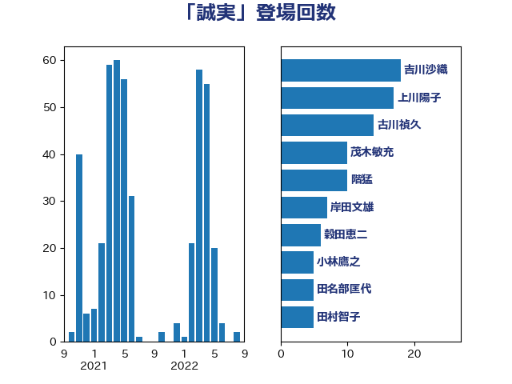

単語「誠実」

| 吉川沙織 | 立憲民主党 | 18 回 |
| 上川陽子 | 自由民主党 | 17 回 |
| 古川禎久 | 自由民主党 | 14 回 |
| 茂木敏充 | 自由民主党 | 10 回 |
| 階猛 | 立憲民主党 | 10 回 |
| 岸田文雄 | 自由民主党 | 7 回 |
| 穀田恵二 | 日本共産党 | 6 回 |
| 小林鷹之 | 自由民主党 | 5 回 |
| 田名部匡代 | 立憲民主党 | 5 回 |
| 田村智子 | 日本共産党 | 5 回 |
| 加藤勝信 | 自由民主党 | 4 回 |
| 古賀之士 | 立憲民主党 | 4 回 |
| 岸信夫 | 自由民主党 | 4 回 |
| 林芳正 | 自由民主党 | 4 回 |
| 沢田良 | 日本維新の会 | 4 回 |
| 浅田均 | 日本維新の会 | 4 回 |
| 笠井亮 | 日本共産党 | 4 回 |
| 篠原孝 | 立憲民主党 | 4 回 |
| 菅義偉 | 自由民主党 | 4 回 |
| 足立康史 | 日本維新の会 | 4 回 |
| 上田清司 | 国民民主党 | 3 回 |
| 井上信治 | 自由民主党 | 3 回 |
| 佐藤英道 | 公明党 | 3 回 |
| 小田原潔 | 自由民主党 | 3 回 |
| 末松信介 | 自由民主党 | 3 回 |
| 本村伸子 | 日本共産党 | 3 回 |
| 東徹 | 日本維新の会 | 3 回 |
| 猪口邦子 | 自由民主党 | 3 回 |
| 近藤和也 | 立憲民主党 | 3 回 |
| 野上浩太郎 | 自由民主党 | 3 回 |
| 阿部知子 | 立憲民主党 | 3 回 |
| 青柳仁士 | 日本維新の会 | 3 回 |
| 伊藤岳 | 日本共産党 | 2 回 |
| 堂故茂 | 自由民主党 | 2 回 |
| 大串博志 | 立憲民主党 | 2 回 |
| 大島敦 | 立憲民主党 | 2 回 |
| 宮本徹 | 日本共産党 | 2 回 |
| 小泉進次郎 | 自由民主党 | 2 回 |
| 小西洋之 | 立憲民主党 | 2 回 |
| 山岸一生 | 立憲民主党 | 2 回 |
| 山本博司 | 公明党 | 2 回 |
| 山添拓 | 日本共産党 | 2 回 |
| 山田勝彦 | 立憲民主党 | 2 回 |
| 岸真紀子 | 立憲民主党 | 2 回 |
| 庄子賢一 | 公明党 | 2 回 |
| 斉藤鉄夫 | 公明党 | 2 回 |
| 斎藤嘉隆 | 立憲民主党 | 2 回 |
| 有村治子 | 自由民主党 | 2 回 |
| 本庄知史 | 立憲民主党 | 2 回 |
| 松野博一 | 自由民主党 | 2 回 |
| 森まさこ | 自由民主党 | 2 回 |
| 森本真治 | 立憲民主党 | 2 回 |
| 武田良太 | 自由民主党 | 2 回 |
| 浜田聡 | NHK党 | 2 回 |
| 田島麻衣子 | 立憲民主党 | 2 回 |
| 石垣のりこ | 立憲民主党 | 2 回 |
| 石川大我 | 立憲民主党 | 2 回 |
| 石橋通宏 | 立憲民主党 | 2 回 |
| 谷田川元 | 立憲民主党 | 2 回 |
| 道下大樹 | 立憲民主党 | 2 回 |
| 金田勝年 | 自由民主党 | 2 回 |
| 鈴木俊一 | 自由民主党 | 2 回 |
| 鎌田さゆり | 立憲民主党 | 2 回 |
| 青木愛 | 立憲民主党 | 2 回 |
| 馬場伸幸 | 日本維新の会 | 2 回 |
| 高橋千鶴子 | 日本共産党 | 2 回 |
| 上杉謙太郎 | 自由民主党 | 1 回 |
| 中谷一馬 | 立憲民主党 | 1 回 |
| 伊佐進一 | 公明党 | 1 回 |
| 伊波洋一 | 無所属 | 1 回 |
| 伊藤孝恵 | 国民民主党 | 1 回 |
| 佐藤啓 | 自由民主党 | 1 回 |
| 佐藤茂樹 | 公明党 | 1 回 |
| 倉林明子 | 日本共産党 | 1 回 |
| 吉田宣弘 | 公明党 | 1 回 |
| 吉田忠智 | 立憲民主党 | 1 回 |
| 吉田統彦 | 立憲民主党 | 1 回 |
| 塩崎彰久 | 自由民主党 | 1 回 |
| 塩川鉄也 | 日本共産党 | 1 回 |
| 塩村あやか | 立憲民主党 | 1 回 |
| 大野敬太郎 | 自由民主党 | 1 回 |
| 大野泰正 | 自由民主党 | 1 回 |
| 安達澄 | 無所属 | 1 回 |
| 宗清皇一 | 自由民主党 | 1 回 |
| 小森卓郎 | 自由民主党 | 1 回 |
| 小池晃 | 日本共産党 | 1 回 |
| 小沼巧 | 立憲民主党 | 1 回 |
| 山下貴司 | 自由民主党 | 1 回 |
| 山井和則 | 立憲民主党 | 1 回 |
| 山岡達丸 | 立憲民主党 | 1 回 |
| 山崎正昭 | 自由民主党 | 1 回 |
| 山崎誠 | 立憲民主党 | 1 回 |
| 山本香苗 | 公明党 | 1 回 |
| 山田美樹 | 自由民主党 | 1 回 |
| 岩屋毅 | 自由民主党 | 1 回 |
| 岩渕友 | 日本共産党 | 1 回 |
| 川合孝典 | 国民民主党 | 1 回 |
| 平木大作 | 公明党 | 1 回 |
| 後藤田正純 | 自由民主党 | 1 回 |
| 後藤祐一 | 立憲民主党 | 1 回 |
| 木原誠二 | 自由民主党 | 1 回 |
| 末松義規 | 立憲民主党 | 1 回 |
| 杉田水脈 | 自由民主党 | 1 回 |
| 枝野幸男 | 立憲民主党 | 1 回 |
| 柚木道義 | 立憲民主党 | 1 回 |
| 柴山昌彦 | 自由民主党 | 1 回 |
| 柴田巧 | 日本維新の会 | 1 回 |
| 梅谷守 | 立憲民主党 | 1 回 |
| 横沢高徳 | 立憲民主党 | 1 回 |
| 江田憲司 | 立憲民主党 | 1 回 |
| 泉田裕彦 | 自由民主党 | 1 回 |
| 牧山ひろえ | 立憲民主党 | 1 回 |
| 玉木雄一郎 | 国民民主党 | 1 回 |
| 田村憲久 | 自由民主党 | 1 回 |
| 田村貴昭 | 日本共産党 | 1 回 |
| 石井啓一 | 公明党 | 1 回 |
| 石井正弘 | 自由民主党 | 1 回 |
| 石井章 | 日本維新の会 | 1 回 |
| 礒崎哲史 | 国民民主党 | 1 回 |
| 福山哲郎 | 立憲民主党 | 1 回 |
| 稲田朋美 | 自由民主党 | 1 回 |
| 竹谷とし子 | 公明党 | 1 回 |
| 紙智子 | 日本共産党 | 1 回 |
| 細野豪志 | 自由民主党 | 1 回 |
| 羽田次郎 | 立憲民主党 | 1 回 |
| 自見はなこ | 自由民主党 | 1 回 |
| 舞立昇治 | 自由民主党 | 1 回 |
| 舩後靖彦 | れいわ新選組 | 1 回 |
| 船橋利実 | 自由民主党 | 1 回 |
| 萩生田光一 | 自由民主党 | 1 回 |
| 西岡秀子 | 国民民主党 | 1 回 |
| 赤嶺政賢 | 日本共産党 | 1 回 |
| 赤羽一嘉 | 公明党 | 1 回 |
| 辻元清美 | 立憲民主党 | 1 回 |
| 逢坂誠二 | 立憲民主党 | 1 回 |
| 金子恵美 | 立憲民主党 | 1 回 |
| 鈴木淳司 | 自由民主党 | 1 回 |
| 鈴木義弘 | 国民民主党 | 1 回 |
| 鈴木貴子 | 自由民主党 | 1 回 |
| 長浜博行 | 無所属 | 1 回 |
| 長谷川岳 | 自由民主党 | 1 回 |
| 音喜多駿 | 日本維新の会 | 1 回 |
| 高橋克法 | 自由民主党 | 1 回 |
| 高良鉄美 | 無所属 | 1 回 |
| 鬼木誠 | 立憲民主党 | 1 回 |
| 鷲尾英一郎 | 自由民主党 | 1 回 |
| 麻生太郎 | 自由民主党 | 1 回 |